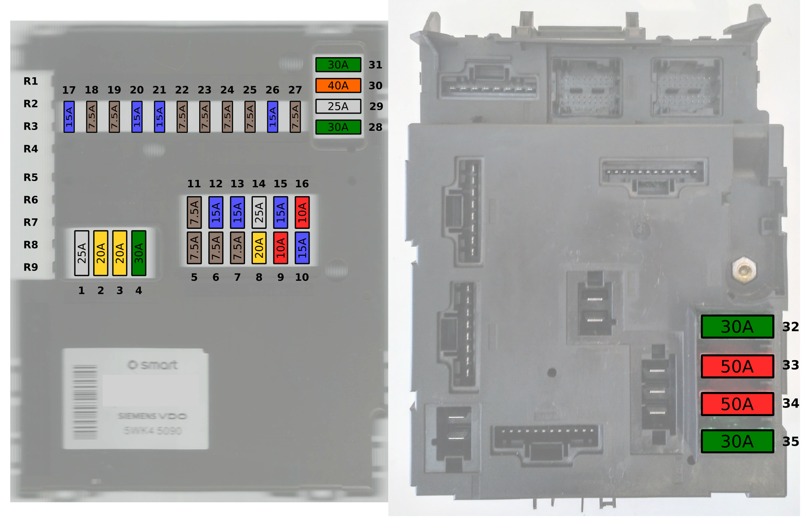

Fusibles#
{kind=link}
Puedes ver más funciones de los fusibles en Conexiones de la SAM
nº |
color |
A |
función |
|---|---|---|---|
1 |
25 |
motor de arranque |
|
2 |
amarillo |
20 |
limpiaparabrisas, bomba de agua |
3 |
amarillo |
20 |
ventilador de la calefacción, asientos calefactables |
4 |
verde |
30 |
elevalunas (izq y der) |
5 |
marrón |
7.5 |
Interruptor de luces |
6 |
marrón |
7.5 |
luces de posición delanteras, trasera, cuadro de instrumentos, matrícula |
7 |
marrón |
7.5 |
luces de posición y traseras (izq) |
8 |
yellow |
20 |
bobinas de encendido |
9 |
rojo |
10 |
ECU, conector del motor, inyección de aire secundaria, válvula de purga del canister (EVAP) |
10 |
azul |
15 |
bomba de aire secundaria, ECU, inyectores |
11 |
marrón |
7.5 |
cuadro de instrumentos, antena de llave, ordenador de viaje, OBD |
12 |
azul |
15 |
radio CD, luz interior |
13 |
azul |
15 |
antiniebla |
14 |
25 |
válvulas ESP |
|
15 |
azul |
15 |
compresor A/C, bomba o ventilador del intercooler |
16 |
rojo |
10 |
bomba de gasolina |
17 |
azul |
15 |
limpiaparabrisas trasero (no utilizado) |
18 |
marrón |
7.5 |
disparo del airbag, ESP |
19 |
marrón |
7,5 |
ajuste de espejos, lona |
20 |
azul |
15 |
radio, CD, cuadro de instrumentos, tacómetro, OBD, luz de marcha atrás, controlador PAS, relé de antinieblas |
21 |
azul |
15 |
enchufe del encendedor (mechero) |
22 |
marrón |
7.5 |
luz de cruce derecha |
23 |
marrón |
7.5 |
luz de cruce izquierda. |
24 |
marrón |
7.5 |
luz larga derecha |
25 |
marrón |
7.5 |
luz larga izquierda/luz combinada |
26 |
azul |
15 |
luz de freno |
27 |
marrón |
7.5 |
unidad de control del motor |
28 |
verde |
30 |
luna calefactable, retrovisores calefactables |
29 |
25 |
Soft top motor |
|
30 |
naranja |
40 |
relé del cambio automático, unidad SE Drive |
31 |
verde |
30 |
claxon, cierre centralizado, portón trasero |
32 |
verde |
30 |
bomba de inyección de aire secundaria |
33 |
rojo |
50 |
Ignición |
34 |
rojo |
50 |
bomba ESP |
35 |
verde |
30 |
dirección asistida |
36 |
auxiliar (R1) 15 – activo con contacto |
||
37 |
auxiliar (R2) 15 – activo con contacto |
||
38 |
auxiliar (R3) 15 – activo con contacto |
||
39 |
auxiliar (R4) 15 – activo con contacto |
||
40 |
auxiliar (R5) 30 – activo siempre |
||
41 |
auxiliar (R6) 30 – activo siempre |
||
42 |
auxiliar (R7) 30 – activo siempre |
||
43 |
auxiliar (R8) 30 – activo siempre |
||
44 |
25 |
Asientos calfactables (R9) |